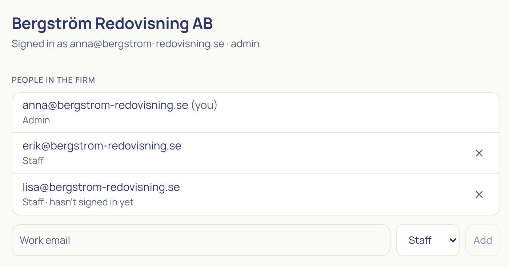
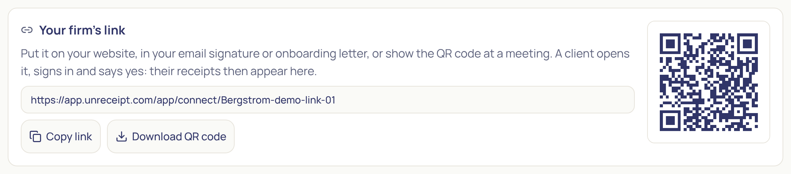
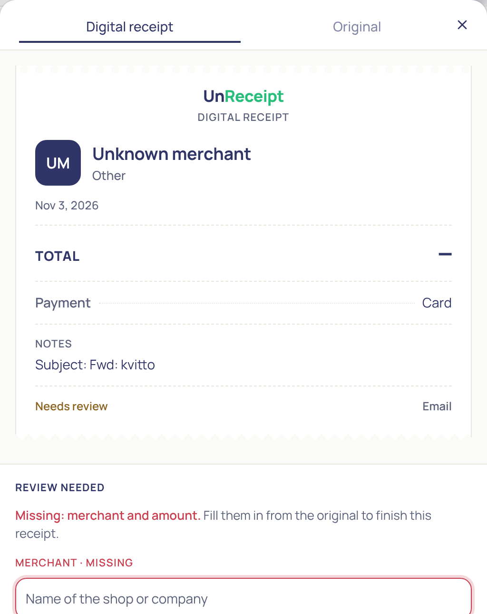
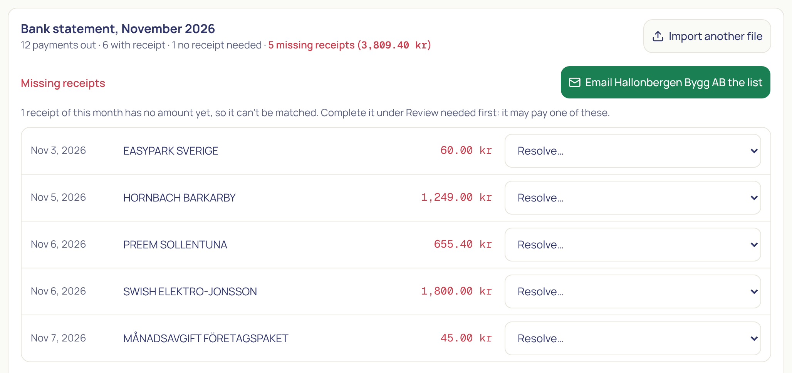
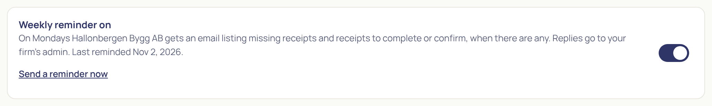

Welcome to the pilot. Your firm portal, step by step.
This guide takes you from your first sign-in to your first monthly export: how to bring clients in, check their receipts, compare them with the bank statement and export everything for your bookkeeping. It takes about 15 minutes to read. Setting up takes about 10.
1The pilot in one pageWhat UnReceipt does, and what it doesn't yet
2Set up your firmSign in, join, add colleagues
3Bring your clients inInvite by email, or share your firm's link
4Check receipts, client by clientThe client list and the receipt sheet
5The bank checkFind every payment without a receipt
6Reminders and exportMonday emails, and the monthly ZIP
7What you see, and what you don'tPrivacy rules, currencies, your data
8What we'd like from youYour feedback shapes the product
Your firm portal
app.unreceipt.com/firm
Try it with sample data
app.unreceipt.com/demo
Questions
support@unreceipt.com
A client guide comes with this one.
“Your receipts, straight to your accountant” explains to your clients how to connect and send receipts. Attach it to your invitations, or forward it as is.
UnReceipt
Guide for accounting firms
1
The pilot in one page
What UnReceipt does for your firm, and the limits you should know before you start.
What UnReceipt does
Your clients photograph or forward their receipts; each one is read automatically: merchant, date, amount, VAT.
You see every client on one screen, with what still needs a check.
You import the client's bank statement and get the list of payments with no receipt, which you can email to the client in one click.
Every Monday, clients get a reminder of what's missing, sent in your firm's name.
Once a month, you export one ZIP per client: a bookkeeping file with suggested BAS accounts and VAT lines, plus PDFs and the original files.
What it is not
Not a bookkeeping program. It collects and checks receipts and suggests accounts. You decide.
No direct link to your bookkeeping software yet: the export is a CSV file you import.
No bank login. The bank check works from the statement file your client or you download (CSV).
The app and its emails are in English for now.
What it costs
Nothing for your firm: no plan and no fee per user. Your clients use it free for the whole pilot.
Where the data is
Stored in the EU (Frankfurt), encrypted. Your access to a client ends the moment they stop sharing.
Still rough at the edges
The BAS suggestions are standard values, chosen from each receipt's category. We want to check them with you (section 8); you can change any receipt's account.
A client who connects Gmail sees Google's “Google hasn't verified this app” screen: Google's review is still in progress. Forwarding has no such screen.
A suggested rhythm for the pilot
When
What
Day 1
Set up your firm (section 2) and connect two or three clients you know well (section 3).
Weeks 1–3
Clients send receipts as they go. You look in once or twice a week and check what's waiting (section 4).
Month end
Import each client's bank statement, email them what's missing, then export (sections 5 and 6).
Every 2 weeks
A 30-minute call with us: what worked, what slowed you down, what's missing.
UnReceipt · Guide for accounting firms · Pilot edition2
UnReceipt
Guide for accounting firms
2
Set up your firm
About 10 minutes. Your firm already exists on UnReceipt: we created it for you with your email address.
1
Open the email “<your firm> is ready on UnReceipt”
Press Open the firm portal. It opens the sign-in page at app.unreceipt.com.
2
Sign in with the same email address
No password yet? Choose Forgot password? Sign in with an email code, then Email me a code. You get a 6-digit code (the same email also has a sign-in button). You can also pick Create account and set a password, using that same address as your work email.
3
Press “Join <your firm>”
The page reads “<your firm> added you to its team”. Join takes you to your client list. (Not me is for someone who was added by mistake: don't press it.)
4
Add your colleagues (optional)
Go to Settings, type their work email under People in the firm, choose Staff or Admin, and press Add. They don't get an email from us: tell them to sign in at app.unreceipt.com with that address, and they'll land on the same Join page.
Use exactly the address we registered. If you sign up with a different address, you get an ordinary company account instead of the firm portal. If that happens, just write to us and we'll fix it.

Settings: the people in your firm. “hasn't signed in yet” means they still need to sign in once and press Join.
Admin and Staff
Admin
Staff
See and check every client
✓
✓
Invite clients, bank, export
✓
✓
Add or remove people
✓
–
Replace or turn off the firm's link
✓
–
Replies to the Monday reminders go to the firm's first admin, so make sure that's the person who reads them.
UnReceipt · Guide for accounting firms · Pilot edition3
UnReceipt
Guide for accounting firms
3
Bring your clients in
Three ways, all on the Clients page. In every case the client says yes themselves: nobody's receipts are shared without their consent.
A · Invite one client by email
Press Add client, then fill in the company name, the org.nr if you have it, and the email of the person who handles receipts. Press Send invite.
They get the email “<your firm> wants to see your receipts” with a Yes, share button. If they're new to UnReceipt, they create a free account first, with that same email address. Until they answer, the invite waits under Waiting for the client, where you can Withdraw it. An invite is valid for 14 days. The email also offers the iPhone app (a beta, through Apple's TestFlight); clients without an iPhone use the website.
B · Invite several at once
Press Invite several and paste up to 25 clients, one per line: just an email, or the company name and the email as copied from a spreadsheet (Company AB, name@company.se). Addresses you've already invited, or already work with, are skipped.
C · Share your firm's link or QR code
Your firm has its own link and QR code at the bottom of the Clients page. Put it in your email signature or engagement letter, or show the QR code in a meeting. A client opens it, signs in and presses Yes, share. An admin can replace the link at any time (the old one stops working) or turn it off.

Good to know. A company can share with one firm at a time. If a client says it already has a firm, it must stop sharing with that firm first (Settings → Your accountant). Every new link also sends the client a short confirmation email.
UnReceipt · Guide for accounting firms · Pilot edition4
UnReceipt
Guide for accounting firms
4
Check receipts, client by client
The Clients page shows one month at a time (arrows next to the month). Click a client to open their month.
Column
What it counts
New
Receipts that arrived in the last 7 days, whatever their date.
Review needed
Receipts of this month that nobody has confirmed yet, or that miss the merchant, amount or date.
Ready
Confirmed receipts of this month, not exported yet.
Exported
Receipts of this month already included in an export.
Open a receipt
Click any receipt on a client's page. The Digital receipt tab shows what was read; the Original tab shows the photo, PDF or email it came from.
If it's under Review needed, what's missing is in red: fill it in from the original and press Complete receipt. If nothing is missing, check it and press Confirm receipt. Or leave it to the client: the Monday reminder asks them.
If it's ready, you can Download PDF, Edit receipt, or Mark as booked with a verification reference (optional). The booked date and reference then show on the receipt and go into the export.
BAS account. Each ready receipt shows the account suggested from its category (fuel at Circle K is “Transport”: 5800). Type your own and press Save account; the export then uses yours. Use the suggestion goes back.
Only the client can delete a receipt.

A forwarded email where the merchant and amount couldn't be read.
UnReceipt · Guide for accounting firms · Pilot edition5
UnReceipt
Guide for accounting firms
5
The bank check
The fastest way to find what's missing: compare the client's bank statement with their receipts.
1
Download the statement from the bank as CSV
Ideally the month you are checking. A .csv or .txt file up to 2 MB. It needs a date column and an amount column (or a debit and a credit column). Swedish, English and French column names are recognised, such as Transaktionsdag / Bokföringsdag / Date and Belopp / Amount / Montant.
2
On the client's page, press “Import bank statement (CSV)”
Only money going out is checked. A payment matches a receipt with the same amount, paid from 3 days before to 45 days after the receipt's date. For a receipt in another currency, the amount converted at the ECB rate may differ by up to 3%.
3
Resolve what's left
Each payment without a receipt has a Resolve… menu: pick the receipt that pays it, or say why no receipt is needed. Every choice can be undone.
4
Email the client the list
Email <client> the list sends the company's owners the missing payments (up to 40 lines) with an Add receipts button. Their replies come to you. Up to 3 times a day per client.

Sample data: 12 payments out, 6 with a receipt, 1 that needs none, 5 missing.
“No receipt needed” reasons
Bank fee (the statement is the verifikation)
Transfer between own accounts
Skatteverket tax account
Salary (payroll is the verifikation)
Loan or interest (lender's notice)
Supplier invoice booked outside UnReceipt
Another document is the verifikation
Imported the wrong file?
Wrong file? Remove this month's bank lines at the bottom of the panel deletes that month's lines and your choices for them. Importing the same file twice doesn't create duplicates.
UnReceipt · Guide for accounting firms · Pilot edition6
UnReceipt
Guide for accounting firms
6
Reminders and export
Two panels at the top of every client's page.
The Monday reminder
Every Monday morning, each client company's owners get one email from your firm listing:
bank payments of this and last month that still have no receipt;
receipts that miss the merchant, amount or date;
how many receipts wait only for their confirmation.
When everything is in order, nothing is sent. Replies go to your firm's first admin.
It's on for every new client. Switch it off per client with Weekly reminder on. Send a reminder now sends the same email immediately (twice a day at most).
The client can turn the reminders off for their company in Settings → Your accountant. You can't override that, but you can still email them the bank list.

The monthly export
Press Create export (ZIP with bookkeeping.csv). With Only receipts not yet exported ticked (the default), the ZIP holds the month's ready receipts that you haven't exported before, and marks them Exported, so nothing is booked twice. Untick it to download the whole month again; that changes no marks.
Receipts still under Review needed are left out of the PDFs until they're completed.
The download link works for 15 minutes; the file is deleted after 24 hours. Up to 1,000 receipts per export.
In the ZIP
bookkeeping.csv
One line per receipt and VAT rate: date, merchant, seller org.nr and VAT no., amounts, SEK amount (or ECB estimate), VAT rate, net, VAT, BAS account (yours, or the suggestion), VAT account (2640), category, booked ref, file names.
receipts.csv
One line per receipt.
pdf/
A clean PDF of each ready receipt.
originals/
The photo, PDF or email each one came from.
edit-history.json
Who changed what, if anything was edited.
UnReceipt · Guide for accounting firms · Pilot edition7
UnReceipt
Guide for accounting firms
7
What you see, and what you don't
So you can answer your clients' questions with confidence.
Receipt
When your firm sees it
Photo or upload
As soon as it's saved.
Forwarded email
As soon as it arrives, under Review needed until it's confirmed.
From a connected Gmail / Outlook
Only once the client has confirmed it. These arrive by themselves, so the client checks them first.
An employee's receipt
Only once the company has approved it (for companies that use approvals).
A client can stop sharing at any time (Settings → Your accountant). Your access, and the bank lines you imported for them, end at once.
Foreign receipts keep their own amount and get the ECB rate of the purchase day, marked as an estimate. If the client or you type the amount actually charged from the bank statement, that amount is used instead.
Your clients' data is stored in the EU (Frankfurt). We never ask for bank logins.
8
What we'd like from you
You're the first firm on UnReceipt. What you tell us decides what we build next.
Things we'd like you to check
The suggested BAS accounts: are they the ones you would use? Which ones do you change most often?
Does bookkeeping.csv import into your bookkeeping software? Which one do you use?
Do your clients' bank statements import? Tell us which bank if one doesn't.
Are the Monday reminders and the bank list worded the way you'd write to your clients?
What do you still do outside UnReceipt that you'd rather do in it?
How to reach us
Anything odd, slow or unclear, however small: write to support@unreceipt.com. A screenshot helps.
Every two weeks we'll book a 30-minute call to go through it together.
Thank you for building this with us.
UnReceipt · Guide for accounting firms · Pilot edition8